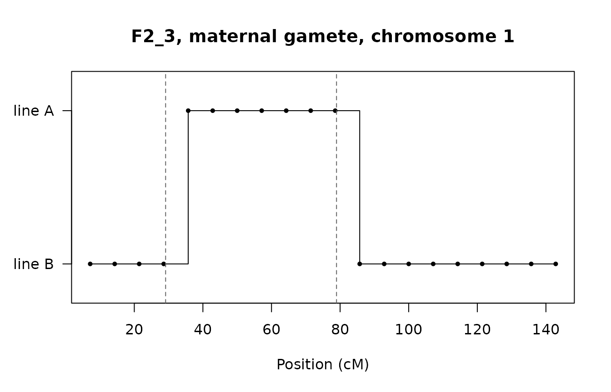
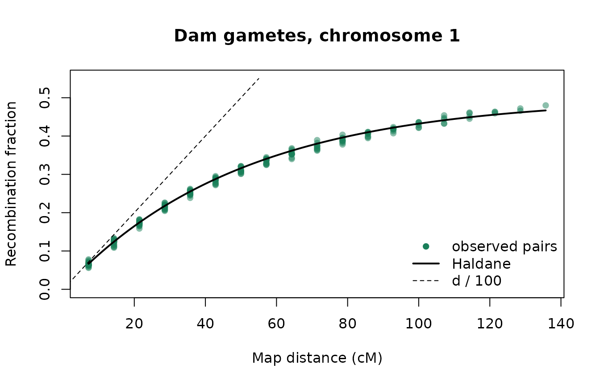

Every offspring add_offspring() creates receives one
gamete from each parent, and each gamete is a recombined copy of that
parent’s two haplotypes. Linkage disequilibrium, the decay of QTL-marker
associations, and the response to genomic selection all follow from how
those crossovers are drawn. This article explains the model, shows where
the genetic map comes from, and then checks the simulated
recombination against the map, so you can see for yourself that
the rates are right.
The model
For each gamete and each chromosome,
add_offspring():
- reads the genetic positions (
pos_cM) of the chromosome’s loci from the map of the parent making the gamete; - draws the number of crossovers from a Poisson distribution with mean
L / 100, whereLis the chromosome’s genetic length in cM (the last locus’spos_cM), i.e. its length in Morgans; - picks the homolog the gamete starts on, 50/50;
- places the crossovers uniformly on
[0, L]; each locus takes the homolog reached after the crossovers to its left, switching at every one.
Crossovers that fall independently and uniformly are the
Haldane model: there is no crossover interference, and
two loci d cM apart recombine with probability
At short distances r is about d / 100; at
long distances it approaches 1/2, as for loci on different
chromosomes. The same algorithm exists in C++ (used by default) and in R
(options(tidybreed.kernel = "r")), and they give
bit-identical output for a given seed.
Every gamete draws from its own random stream, keyed on the base
seed, the offspring and the parent, so a seeded call gives the same
offspring whatever batch_size is.
Where the map comes from
define_genome() places loci evenly along each chromosome
(pos_bp) and gives each a genetic position
pos_cM = pos_bp / 1e6 * cM_per_Mb. The rate can be one
number for the whole genome or one per chromosome:
set.seed(2026)
pop <- open_pop(pop_name = "recombination", db_name = ":memory:") |>
define_genome(n_loci = 60, n_chr = 3,
chr_len_Mb = c(150, 100, 80),
cM_per_Mb = c(1, 0.5, 1))
#> duckdb keeps downloaded extensions and secrets in a temporary directory:
#> ℹ /tmp/RtmpvmPipF/duckdb
#> This is removed when the R session ends.
#> • Extensions are re-downloaded each session.
#> • Secrets are lost.
#> ℹ Run duckdb(shared_home = TRUE) (or create ~/.duckdb) to keep them (suitable for most users).
#> ℹ Run duckdb(shared_home = FALSE) to accept the temporary directory (and silence this message).
#> ℹ See ?duckdb_storage for details and alternatives.
#> Opened in-memory population 'recombination'
#>
#> Defined genome: 60 loci across 3 chromosomes | chr lengths (Mb): 1:150, 2:100, 3:80
#> Tables written: genome_meta, genome_map, ind_haplotype, ind_genotype, ind_crossover, chr_inheritance, chr_recombination, genome_effects, genome_effect_members, genome_effect_member_origins
#> Views created: genome_effect_terms, genome_effect_loci
# genome_map holds the genetic positions, genome_meta the chromosome of each locus
map <- get_table(pop, "genome_map") |>
select(locus_id, pos_cM) |>
collect() |>
inner_join(get_table(pop, "genome_meta") |> select(locus_id, chr_name) |> collect(),
by = "locus_id")
map |>
group_by(chr_name) |>
summarise(n_loci = n(), first_cM = min(pos_cM), last_cM = max(pos_cM))
#> # A tibble: 3 × 4
#> chr_name n_loci first_cM last_cM
#> <chr> <int> <dbl> <dbl>
#> 1 1 20 7.14 143.
#> 2 2 20 2.38 47.6
#> 3 3 20 3.81 76.2Chromosome 2 is 100 Mb but only 0.5 cM/Mb, so it is about 50 cM long
and averages half a crossover per meiosis. Loci are never placed at the
chromosome ends, so the length that matters, the last locus’s position,
is a little shorter than chr_len_Mb * cM_per_Mb. A
crossover beyond the last locus could not change any allele, so this
costs nothing.
genome_map also has sex and
line_name columns. A gamete uses, per locus, the most
specific row that matches its producing parent: (sex and line), then
sex, then line, then the default map. This is how a sex-specific map
(female maps are usually longer) or a line-specific map is applied.
define_genome() writes only the default map, and there is
not yet an exported function to write the others.
Making recombination visible
Recombination is only visible where a parent’s two homologs differ. A
cross between two lines makes every locus informative: line A sires
mated to line B dams give F1 animals with one A copy and one B copy
everywhere, and every allele in ind_haplotype carries its
line_origin. In an F1 gamete, each switch from A to B (or
back) is a recombination, whatever the alleles are.
Two chromosome rules make the example richer. Chromosome 3 is an X: males inherit only the dam’s copy. Chromosome 2 does not recombine in males (achiasmy, as in Drosophila males).
pop <- pop |>
define_chromosome("3", offspring_sex = "M", from_parent_1 = 0, from_parent_2 = 1) |>
define_chromosome("2", parent_sex = "M", recombines = FALSE) |>
define_founder_haplotypes(n_haplotypes = 10, line_name = "A") |>
define_founder_haplotypes(n_haplotypes = 10, line_name = "B")
#> Defined chr_inheritance rule for '3' (offspring_sex=M, line_name=NULL): from_parent_1=0, from_parent_2=1
#> Defined chr_recombination rule for '2' (parent_sex=M, line_name=NULL): recombines=FALSE
#> Generating 10 founder haplotypes (method = "uniform")...
#> Created founder_haplotypes for line 'A' (10 haplotypes x 60 loci)
#> Generating 10 founder haplotypes (method = "uniform")...
#> Created founder_haplotypes for line 'B' (10 haplotypes x 60 loci)
pop <- pop |>
get_table("founder_haplotypes") |>
filter(line_name == "A") |>
add_founders(n_males = 5, n_females = 0, line_name = "A")
#> Added 5 founders (5 males, 0 females) to line 'A'
pop <- pop |>
get_table("founder_haplotypes") |>
filter(line_name == "B") |>
add_founders(n_males = 0, n_females = 5, line_name = "B")
#> Added 5 founders (0 males, 5 females) to line 'B'
# F1: A sires x B dams
f1 <- tibble(id_parent_1 = paste0("A_", rep(1:5, 4)),
id_parent_2 = paste0("B_", rep(1:5, 4)),
sex = rep(c("M", "F"), 10), line_name = "F1")
pop <- add_offspring(pop, f1, seed = 1)
#> Added 20 offspring (base_seed = 1)
# F2: F1 males x F1 females, recording every crossover
n_f2 <- 1500
f1_ids <- get_table(pop, "ind_meta") |> filter(line_name == "F1") |> collect()
f2 <- tibble(
id_parent_1 = rep(f1_ids$id_ind[f1_ids$sex == "M"], length.out = n_f2),
id_parent_2 = rep(f1_ids$id_ind[f1_ids$sex == "F"], length.out = n_f2),
sex = rep(c("M", "F"), length.out = n_f2), line_name = "F2")
pop <- add_offspring(pop, f2, seed = 2, store_crossovers = TRUE)
#> Added 1500 offspring (base_seed = 2)Here is one F2 animal’s maternal gamete on chromosome 1: the line
each allele came from, with the crossovers recorded in
ind_crossover as dashed lines.
f2_haps <- get_table(pop, "ind_haplotype") |>
filter(substr(id_ind, 1, 3) == "F2_") |>
select(id_ind, parent_origin, locus_id, line_origin) |>
collect() |>
inner_join(map, by = "locus_id")
one <- f2_haps |>
filter(id_ind == "F2_3", parent_origin == 2, chr_name == "1")
xo <- get_table(pop, "ind_crossover") |>
filter(id_ind == "F2_3", parent_origin == 2, chr_name == "1") |>
collect()
plot(one$pos_cM, ifelse(one$line_origin == "A", 1, 0), type = "s",
yaxt = "n", ylim = c(-0.2, 1.2), xlab = "Position (cM)", ylab = "",
main = "F2_3, maternal gamete, chromosome 1")
points(one$pos_cM, ifelse(one$line_origin == "A", 1, 0), pch = 16, cex = 0.7)
axis(2, at = c(0, 1), labels = c("line B", "line A"), las = 1)
abline(v = xo$pos_cM, lty = 2, col = "grey40")
The points are the loci. The line changes at the first locus past
each crossover, because only loci are observed: a step falls between two
loci exactly when an odd number of crossovers lies between them. Two
crossovers between the same pair of loci leave no trace, which is why
the recombination fraction is below d / 100 at longer
distances.
Checking the rates against the map
For every pair of loci on a chromosome, the observed recombination fraction is the share of gametes whose line changes between the two loci. Plotted against the map distance it should follow the Haldane curve.
# Recombination fraction for every pair of loci on one chromosome, from the
# gametes of one parent sex (parent_origin 1 = sire, 2 = dam)
pair_rates <- function(haps, chr, origin) {
h <- haps |>
filter(chr_name == chr, parent_origin == origin) |>
arrange(id_ind, locus_id)
pos <- sort(unique(h$pos_cM))
W <- matrix(h$line_origin == "A", ncol = length(pos), byrow = TRUE)
pairs <- t(combn(length(pos), 2))
data.frame(
d = pos[pairs[, 2]] - pos[pairs[, 1]],
r_obs = colMeans(W[, pairs[, 1]] != W[, pairs[, 2]]),
n = nrow(W)
)
}
haldane <- function(d) 0.5 * (1 - exp(-2 * d / 100))
dam_chr1 <- pair_rates(f2_haps, "1", 2)
plot(dam_chr1$d, dam_chr1$r_obs, pch = 16, col = "#1a7f5a80",
xlab = "Map distance (cM)", ylab = "Recombination fraction",
main = "Dam gametes, chromosome 1", ylim = c(0, 0.55))
curve(haldane(x), add = TRUE, lwd = 2)
curve(x / 100, from = 0, to = 55, add = TRUE, lty = 2)
legend("bottomright", c("observed pairs", "Haldane", "d / 100"),
pch = c(16, NA, NA), lty = c(NA, 1, 2), lwd = c(NA, 2, 1),
col = c("#1a7f5a", "black", "black"), bty = "n")
The points sit on the Haldane curve and peel away from the
d / 100 line as double crossovers become common. A
standardised residual,
z = (r_obs - r) / sqrt(r (1 - r) / n), puts every pair on
one scale; a correct model gives values within a few units of 0:
z_summary <- function(x) {
r <- haldane(x$d)
z <- (x$r_obs - r) / sqrt(r * (1 - r) / x$n)
c(pairs = nrow(x), max_abs_z = round(max(abs(z)), 2))
}
rbind(
"dam, chr 1 (1 cM/Mb)" = z_summary(dam_chr1),
"sire, chr 1 (1 cM/Mb)" = z_summary(pair_rates(f2_haps, "1", 1)),
"dam, chr 2 (0.5 cM/Mb)" = z_summary(pair_rates(f2_haps, "2", 2)),
"dam, X" = z_summary(pair_rates(f2_haps, "3", 2))
)
#> pairs max_abs_z
#> dam, chr 1 (1 cM/Mb) 190 1.83
#> sire, chr 1 (1 cM/Mb) 190 2.50
#> dam, chr 2 (0.5 cM/Mb) 190 2.58
#> dam, X 190 2.52Crossover counts
The number of crossovers a gamete has on a chromosome should be
Poisson with mean L / 100. ind_crossover has
one row per crossover; a gamete with none has no row, so the zeros are
added back:
xo_counts <- get_table(pop, "ind_crossover") |>
filter(substr(id_ind, 1, 3) == "F2_", parent_origin == 2, chr_name == "1") |>
count(id_ind) |>
collect()
n_xo <- c(xo_counts$n, rep(0L, n_f2 - nrow(xo_counts)))
L1 <- max(map$pos_cM[map$chr_name == "1"])
k <- 0:max(n_xo)
rbind(observed = tabulate(n_xo + 1L, nbins = length(k)),
expected = round(n_f2 * dpois(k, L1 / 100), 1)) |>
`colnames<-`(k)
#> 0 1 2 3 4 5 6
#> observed 364.0 531.0 345.0 168.0 63.0 25.0 4.0
#> expected 359.5 513.5 366.8 174.7 62.4 17.8 4.2
c(mean = mean(n_xo), variance = var(n_xo), expected = L1 / 100)
#> mean variance expected
#> 1.417333 1.458805 1.428571Sex-dependent rules
The chromosome rules change what a parent passes on:
- Achiasmy. Chromosome 2 does not recombine in males, so an F1 sire passes one of his two chromosome 2 copies whole: every pair of loci has recombination fraction 0, while the dams’ gametes follow the map.
- The X. An F1 male has a single X, from his line B dam. He passes it unchanged to every daughter and nothing to his sons; the F1 females’ X recombines at the map rate (the “dam, X” row above).
sire_chr2 <- pair_rates(f2_haps, "2", 1)
c(max_r_sire_chr2 = max(sire_chr2$r_obs))
#> max_r_sire_chr2
#> 0
pat_x <- f2_haps |>
filter(chr_name == "3", parent_origin == 1) |>
inner_join(get_table(pop, "ind_meta") |> select(id_ind, sex) |> collect(),
by = "id_ind")
table(offspring_sex = pat_x$sex, line_origin = pat_x$line_origin)
#> line_origin
#> offspring_sex B
#> F 15000Only daughters carry a paternal X, and it is always line B.
Assumptions and limits
- No crossover interference. Crossovers are independent (Haldane). Real meiosis spaces crossovers apart and usually forces at least one per chromosome pair, which the Kosambi map function approximates. The Haldane model therefore slightly overstates double recombinants over short distances. For simulating linkage disequilibrium and selection response this is the standard choice.
-
The chromosome ends at its last locus. The
crossover count uses the last locus’s position, not
chr_len_Mb * cM_per_Mb. Alleles are unaffected, but crossover counts read fromind_crossoverare those of the mapped segment. - A chromosome at most 3000 cM long. Longer is refused as almost certainly a units error.
-
Sex- and line-specific maps are honoured by
add_offspring(), butdefine_genome()writes only the default map.
The checks in this article are run, with fixed seeds and larger
samples, in the package’s test suite
(tests/testthat/test-recombination_rates.R), together with
a male-specific map twice the default length.